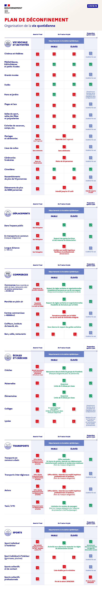

Coronavirus COVID-19 : Carte du déconfinement en France
Sélectionner une date
{{date | date: "d MMMM yyyy":"fr-FR"}}
Situation de l'activité épidémique au {{selectedDate | date: "d MMMM yyyy":"fr-FR"}}
Les données représentent la situation au
{{ selectedDate | date: "d MMMM yyyy":"fr-FR" }}.
Elles sont publiées chaque soir
par le Ministère des Solidarités et de la Santé. La carte est amenée à évoluer jusqu'au 7 mai.
{{ greenDepartments.length | number: "":"fr-FR" }}
Départements en vert (Départements éligibles au déconfinement selon les règles prévues)
{{ departement.translation }},
{{ departement.translation }}
{{ orangeDepartments.length | number: "":"fr-FR" }}
Départements en orange (Départements incertains)
{{ departement.translation }},
{{ departement.translation }}
{{ redDepartments.length | number: "":"fr-FR" }}
Départements en rouge (Départements dont le déconfinement pourrait être durci)
{{ departement.translation }},
{{ departement.translation }}
Carte de synthèse du déconfinement par département au {{selectedDate | date: "d MMMM yyyy":"fr-FR" }}
Explications de la carte
La carte de synthèse se base sur trois critères principaux :
-
La circulation active du virus : le reflet de l'activité virale sur l'ensemble du
territoire national.
C'est un indicateur qui permet de mesurer la fréquence, l'intensité de circulation du virus département
par
département. Pour constituer cet indicateur,
Santé publique France s'appuie sur la part des patients qui s'adressent
aux urgences de leur hôpital pour une suspicion d'infection de COVID-19.
En vert, le pourcentage des admissions aux urgences pour suspicion de COVID-19 est inférieur à 6%.
En orange, le pourcentage des admissions aux urgences pour suspicion de COVID-19 est entre 6% et 10%.
En rouge, le pourcentage des admissions aux urgences pour suspicion de COVID-19 est supérieur à 10%.
-
Le niveau de tension hospitalière sur les capacités de réanimation liées au COVID-19.
Cela correspond au taux d'occupation des lits de réanimation par des patients atteints de COVID-19 par
rapport à la capacité initiale avant l'épidémie.
En vert, la capacité initiale de réanimation est inférieur à 60%.
En orange, la capacité initiale de réanimation est entre 60% et 80%.
En rouge, la capacité initiale de réanimation est supérieur à 80%.
-
La capacité des départements à détecter les personnes qui ont été en contact avec le COVID-19
et à tester les patients ayant des symptômes de COVID-19 pour éviter la reprise de l'épidémie.
Ce troisième critère sera pris en compte le 11 mai.
Au final, la carte de synthèse fait le résumé des indicateurs ci-dessus :
-
Le département apparaît en vert si tous les indicateurs sont au vert.
-
Le département apparaît en rouge si au moins un des indicateurs est en rouge.
-
Le département apparaît en orange si au moins un des indicateurs est en orange et qu'il n'a aucun
indicateur
rouge.
Ces zones oranges ont vocation à basculer d'ici au 11 mai en vert si la pression épidémique se réduit dans
le département,
ou au contraire à basculer en rouge si la pression épidémique grandit.
Carte du déconfinement par département au {{selectedDate | date: "d MMMM yyyy":"fr-FR" }}
Chaque jour, le ministère de la Santé présente la carte du déconfinement.
Carte de circulation active du virus
Carte de la tension hospitalière sur les capacités en réanimation
Explications de la carte et des indicateurs
La carte de synthèse se base sur trois critères principaux :
-
La circulation active du virus : le reflet de l'activité virale sur l'ensemble du
territoire national.
C'est un indicateur qui permet de mesurer la fréquence, l'intensité de circulation du virus département
par
département. Pour constituer cet indicateur,
Santé publique France s'appuie sur la part des patients qui s'adressent
aux urgences de leur hôpital pour une suspicion d'infection de COVID-19.
En vert, le pourcentage des admissions aux urgences pour suspicion de COVID-19 est inférieur à 6%.
En orange, le pourcentage des admissions aux urgences pour suspicion de COVID-19 est entre 6% et 10%.
En rouge, le pourcentage des admissions aux urgences pour suspicion de COVID-19 est supérieur à 10%.
-
Le niveau de tension hospitalière sur les capacités de réanimation liées au COVID-19.
En vert, la capacité initiale de réanimation est inférieur à 60%.
En orange, la capacité initiale de réanimation est entre 60% et 80%.
En rouge, la capacité initiale de réanimation est supérieur à 80%.
-
La capacité des départements à détecter les personnes qui ont été en contact avec le COVID-19
et à tester les patients ayant des symptômes de COVID-19 pour éviter la reprise de l'épidémie.
Ce troisième critère sera pris en compte le 11 mai.
Au final, la carte de synthèse fait le résumé des indicateurs ci-dessus :
-
Le département apparaît en vert si tous les indicateurs sont au vert.
-
Le département apparaît en rouge si au moins un des indicateurs est en rouge.
-
Le département apparaît en orange si au moins un des indicateurs est en orange et qu'il n'a aucun
indicateur
rouge.
Ces zones oranges ont vocation à basculer d'ici au 11 mai en vert si la pression épidémique se réduit dans
le département,
ou au contraire à basculer en rouge si la pression épidémique grandit.
Plan de déconfinement
Voici les détails des mesures concernant la vie sociale et les activités dans le cadre de la stratégie nationale de
déconfinement présentée par Edouard Philippe.
